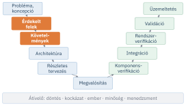
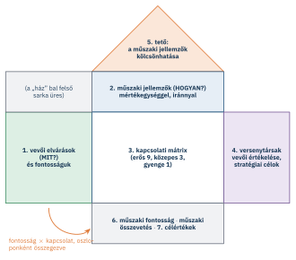
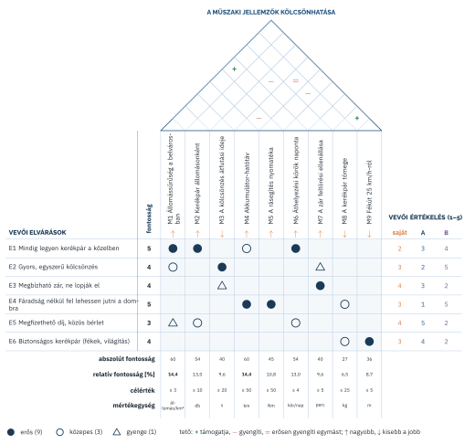
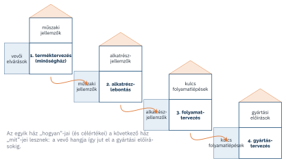

A fejezet feldolgozása után képes leszel:
- elmagyarázni, mire való a minőségfunkció-telepítés (QFD), és hol a helye a V-modellben;
- felépíteni a minőségházat: vevői elvárások és fontosságuk, műszaki jellemzők, kapcsolati mátrix, tető, versenytárs-értékelés, műszaki fontosság és célértékek;
- kiszámítani a műszaki jellemzők abszolút és relatív fontosságát, és értelmezni az eredményt;
- a tetőmátrix alapján felismerni a műszaki jellemzők közötti ellentmondásokat, és kompromisszumot vagy innovatív megoldást keresni;
- a Kano-modell eredményeit beépíteni a minőségházba;
- leírni a négyfázisú QFD-t, és megnevezni a módszer korlátait és újabb, hálózatalapú kiterjesztéseit.
Az érdekelt felek elvárásai (5. fejezet) a vevő nyelvén szólnak: „mindig legyen kerékpár a közelben”, „ne kelljen hajolgatni”. A követelmények (6. fejezet) a mérnök nyelvén: állomássűrűség, ciklusidő, munkamagasság. A kettő közötti fordítás nem magától értetődő. Melyik műszaki jellemző hat leginkább a vevői elégedettségre? Melyikre érdemes a legtöbb fejlesztési erőforrást fordítani? Mekkora legyen a célérték, hogy versenyképesek legyünk? Hol ütköznek egymással a műszaki jellemzők?
A minőségfunkció-telepítés (quality function deployment, QFD) erre a fordításra ad rendszerezett eljárást. Egyetlen táblázatban kapcsolja össze a piac elvárásait, a kielégítésüket befolyásoló műszaki jellemzőket és a versenytársak termékeinek színvonalát. Segít az új termék műszaki paramétereinek meghatározásában, és dokumentációs eszköz is: utólag is áttekinthető marad belőle, hogyan és miért születtek a tervezési döntések.
A fejezet három kérdésre épül:
- Hogyan épül fel és hogyan készül a minőségház?
- Hogyan értelmezzük az eredményét, és hogyan jutunk el belőle a célértékekig?
- Mik a módszer korlátai, és hogyan bővíthető?
7.1. A QFD eredete és célja
Akao Jodzsi, a módszer egyik megalkotója szerint a QFD olyan módszer, amely a vevő elégedettségét célzó tervezési minőséget fejleszti ki, és a vevő igényeit tervezési célokká és a gyártás során alkalmazandó fő minőségbiztosítási pontokká fordítja le (Akao 1990). A módszer az 1970-es évek elején Japánban született. Hauser és Clausing nagy hatású cikke szerint a minőségház első alkalmazása 1972-re, a Mitsubishi kobei hajógyárára tehető, a Toyota és beszállítói pedig sokféle irányban továbbfejlesztették (Hauser és Clausing 1988). A cikk egy szemléletes adatot is közöl: a Toyota karosszériagyártó vállalatánál az új modellek gyártásindítási és előgyártási költségei 1977 januárja és 1984 áprilisa között, a QFD bevezetésével párhuzamosan, a korábbi szint 39%-ára csökkentek (Hauser és Clausing 1988).
A QFD középpontjában a minőségház (house of quality) áll. Hauser és Clausing szerint a minőségház a marketing és a mérnöki tervezés közötti kommunikáció eszköze: olyan közös térkép, amelyen a különböző felelősségű szakemberek a bizonyítékok mintázatára hivatkozva vitathatják meg a tervezési prioritásokat (Hauser és Clausing 1988).
Chan és Wu irodalmi áttekintése szerint a módszer előnyei és hátrányai a következőkben foglalhatók össze (Chan és Wu 2002):
- Előnyök: rendszerezett felépítés, amelyet a minőségtervezésben érdekelt minden vállalati terület használhat; a termék tulajdonságai jól lefedik a vevő követelményeit; a fejlesztési erőforrások a vevő számára fontos jellemzőkre összpontosulnak; a területek közötti kommunikáció javul.
- Hátrányok: a szakértői csapat idő- és költségigényes egyeztetést igényel; a minőségház már viszonylag egyszerű terméknél is bonyolulttá válhat; a súlyok és a kapcsolati erősségek szubjektív becslések.
7.2. A minőségház felépítése
A minőségház hét „helyiségből” áll (7.1. ábra). A számozás egyben a kitöltés sorrendje is.

- Vevői elvárások (MIT?) és fontosságuk. A ház bal oldala. Az elvárásokat a vevő nyelvén, de már rendezetten soroljuk fel, jellemzően 5–15 tételt. Mindegyikhez fontossági súly tartozik, amelyet felmérésből, interjúkból vagy a Kano-elemzésből (5.5. szakasz) határozunk meg.
- Műszaki jellemzők (HOGYAN?). A ház „mennyezete”. Mérhető, a megoldástól lehetőleg független jellemzők mértékegységgel és a javulás irányával (nagyobb vagy kisebb a jobb). Ezek a leendő MOP-ok (6.4. szakasz).
- Kapcsolati mátrix. A ház közepe. Minden elvárás–jellemző párra megállapítjuk, mennyire hat a műszaki jellemző az elvárás teljesülésére. A szokásos skála: erős (9), közepes (3), gyenge (1) vagy nincs kapcsolat (üres).
- Versenytársak vevői értékelése. A ház jobb oldala. A vevők hogyan értékelik a saját (vagy tervezett) termékünket és a versenytársakét az egyes elvárások szerint, 1–5 skálán. Ebből látszik, hol vagyunk lemaradásban, és hol tudunk kitűnni.
- Tető: a műszaki jellemzők kölcsönhatása. A tetőmátrix azt mutatja, hogy egy műszaki jellemző javítása segíti (+) vagy rontja (−) egy másik jellemző teljesítését.
- Műszaki fontosság és műszaki összevetés. A ház alja. A műszaki jellemzők fontossága a kapcsolati mátrixból számítható. Ide kerülhet a saját és a versenytárs termékek mért műszaki értékeinek összevetése is.
- Célértékek. Az elemzés eredménye: minden műszaki jellemzőhöz egy célérték, amely a fejlesztés követelménye lesz.
7.2.1. A műszaki fontosság kiszámítása
A -edik műszaki jellemző abszolút fontossága az elvárások fontosságával súlyozott kapcsolati erősségek összege:
ahol az -edik vevői elvárás fontossága, pedig a kapcsolat erőssége. A relatív fontosság az abszolút fontosság aránya az összeghez:
A 9–3–1 skála szándékosan aszimmetrikus: az erős kapcsolatokat jobban kiemeli, mint egy 3–2–1 skála, és így élesebben elkülönülnek a valóban fontos műszaki jellemzők.
7.3. Kidolgozott példa: a VárosiBringa minőségháza
A VárosiBringa csapata a Kano-felmérés és a fókuszcsoportok alapján hat vevői elvárást választott ki, és kilenc műszaki jellemzőt rendelt hozzájuk. A kész minőségházat a 7.2. ábra mutatja.

Az elvárások fontossága. A csapat a 120 fős felmérés 1–5 skálájú fontossági értékeléseit kerekítette. A legfontosabb az elérhetőség (E1) és a dombos terep leküzdése (E4), mindkettő 5. A Kano-elemzés megerősítette ezt: az elérhetőség egydimenziós, a zár alapvető jellemző.
A kapcsolati mátrix. A csapat soronként haladt, és minden cellánál megkérdezte: ha ezt a műszaki jellemzőt jelentősen javítjuk, mennyivel javul az elvárás teljesülése? Az elérhetőségre (E1) az állomássűrűség (M1), az állomásonkénti kerékpárszám (M2) és az áthelyezési körök száma (M6) hat erősen (9). Az akkumulátor-hatótáv (M4) közepesen (3) hat, mert a lemerült kerékpár nem kölcsönözhető.
A műszaki fontosság. Az állomássűrűség (M1) abszolút fontossága az 7.1. egyenlet szerint:
Ugyanígy , , , , és . Az összeg 416, így a relatív fontosság például .
Értelmezés. A két legfontosabb műszaki jellemző az állomássűrűség és az akkumulátor-hatótáv (14,4–14,4%), őket az állomásonkénti kerékpárszám és az áthelyezés követi (13,0–13,0%). A rendszer sikerét tehát elsősorban a hálózat és a kerékpárok energiaellátása határozza meg, nem a kerékpár tömege vagy a zár feltörési ellenállása. Ez nem jelenti, hogy a zár nem fontos. Alapvető jellemzőként teljesítenie kell egy elfogadható szintet, de azon túl a fejlesztése nem növeli számottevően az elégedettséget.
A versenytársak értékelése. A vevők a tervezett rendszert az elérhetőségben (2) mindkét versenytársnál gyengébbnek látják, a díj és a zár szempontjából viszont jobbnak. A domb leküzdésében az elektromos roller (B) a mérce (5). A stratégiai következtetés: a nyitó hálózatnak elég sűrűnek kell lennie, a rásegítés teljesítményének pedig el kell érnie a roller szintjét.
A tető. A tetőmátrix két jelentős ellentmondást mutat. A hatótáv növelése nagyobb akkumulátort, így nagyobb tömeget jelent (M4–M8, erősen gyengíti). Az erősebb rásegítés növeli a fogyasztást, így csökkenti a hatótávot (M5–M4), és a motor tömege is nő (M5–M8). Ezek a 7.4. szakaszban tárgyalt kompromisszumok.
A célértékek. Az elemzés alapján a csapat kilenc célértéket rögzített (a ház alsó sora), amelyek a rendszerkövetelmények közé kerültek. Például: belvárosi állomássűrűség legalább 3 állomás/km², akkumulátor-hatótáv legalább 50 km, rásegítési nyomaték legalább 50 Nm, tömeg legfeljebb 25 kg.
7.4. A tető: ellentmondások és kompromisszumok
A tetőmátrix a minőségház talán legértékesebb, mégis gyakran elhanyagolt része. Megmutatja, hogy a műszaki jellemzők nem függetlenek egymástól: mely paraméterek gyengítik, és melyek erősítik egymást.
A negatív kapcsolatokkal háromféleképpen bánhatunk:
- Kompromisszum. A két jellemző közül a fontosabbnak adunk elsőbbséget, és a másikra elfogadható célértéket szabunk. A VárosiBringánál a hatótáv relatív fontossága (14,4%) jóval nagyobb a tömegénél (6,5%), ezért a csapat inkább a nagyobb akkumulátort választotta, és a tömegre 25 kg-os felső határt szabott.
- Rendszerszintű megoldás. A konfliktust a rendszer egy másik szintjén oldjuk fel. A hatótáv–tömeg ellentmondás enyhíthető úgy is, hogy az akkumulátort nem kell nagyra méretezni, mert a dokkolók töltenek. A követelmény így „napi 50 km” helyett „két dokkolás között 50 km” lehet.
- Innovatív megoldás. Az ellentmondás egy új műszaki elvvel megszüntethető. A TRIZ-módszertan (9. fejezet) éppen az ilyen műszaki ellentmondások rendszerezett feloldására való. A tetőmátrix negatív kapcsolatai ezért közvetlen bemenetei a koncepcióalkotásnak.
A pozitív kapcsolatok is fontosak, mert egymást erősítő hatást jeleznek. A VárosiBringánál a sűrűbb állomáshálózat (M1) rövidebb áthelyezési utakat jelent, így ugyanakkora áthelyezési kapacitással több kör tehető meg (M6).
7.5. A Kano-modell és a QFD
A minőségház bal oldalán a vevői elvárások fontossága áll. Egyszerűbb esetben ezt közvetlenül egy felmérés fontossági értékeléseiből vesszük. A Kano-modell (5.5. szakasz) azonban rámutat, hogy a fontosság és az elégedettségre gyakorolt hatás nem ugyanaz. Az alapvető jellemzők hiánya erős elégedetlenséget okoz, de a teljesítésükön túli javítás alig növeli az elégedettséget. A vonzó jellemzők viszont a vevő által kimondottan nem kért, mégis nagy elégedettséget okozó lehetőségek.
Matzler és Hinterhuber javasolta, hogy a Kano-modell eredményeit építsük be a QFD-be (Matzler és Hinterhuber 1998). A gyakorlatban ez három dolgot jelent:
- Az alapvető jellemzőkre elég a versenyképes, elfogadható szintet célozni. Ezeket nem érdemes a fontossági súlyok alapján túlfejleszteni.
- Az egydimenziós jellemzőkben érdemes a versenytársak fölé célozni, mert itt a teljesítmény arányosan növeli az elégedettséget.
- A vonzó jellemzők a megkülönböztetés lehetőségei. A minőségházban akkor is érdemes szerepeltetni őket, ha a felmérésben kimondott fontosságuk alacsony.
A VárosiBringánál ezért került be a vevői elvárások közé a közös bérlet (E5). A felmérésben mért fontossága közepes (3) volt, de a Kano-elemzés vonzó jellemzőként azonosította, és a helyi közlekedési társasággal kötött megállapodás olcsón megvalósíthatóvá tette.
7.6. A négyfázisú QFD
A minőségház csak az első lépés. Hauser és Clausing leírása szerint a házak egymáshoz kapcsolhatók: az egyik ház „hogyan”-jai a következő ház „mit”-jeivé válnak. Így a vevő hangja egészen a gyártásig eljut (7.3. ábra) (Hauser és Clausing 1988):
- terméktervezés: vevői elvárások → műszaki jellemzők (a minőségház);
- alkatrész-lebontás: műszaki jellemzők → az alkatrészek jellemzői;
- folyamattervezés: alkatrész-jellemzők → kritikus folyamatlépések és paramétereik;
- gyártástervezés: folyamatlépések → gyártási előírások, ellenőrzési tervek.

A négy fázis jól illeszkedik a V-modell bal ágához. Az első ház a rendszerkövetelmények szintje, a második az alrendszerek és komponensek allokációja (6.5. szakasz), a harmadik és a negyedik pedig a V csúcsa, a megvalósítás és a gyártás. A gyakorlatban ritkán készül mind a négy ház teljes részletességgel. Gyakoribb, hogy a minőségház mellett csak a kritikus műszaki jellemzőkre készül alkatrész- vagy folyamatszintű lebontás.
A KoboCella minőségházában a csavarkötés minősége (a nyomaték pontossága) lett a legfontosabb műszaki jellemző, mert erősen hat a vevő minőségi elvárására és a selejtcsökkentésre is. A csapat erre az egy jellemzőre elkészítette a második házat. Ebben a nyomatékpontosság a „mit”, a csavarozó egység alkatrészjellemzői (az orsó fordulatszám-szabályozása, a nyomatékérzékelő pontossága, a bitbetét kopásállósága, a csavaradagolás megbízhatósága) pedig a „hogyan”. Kiderült, hogy a nyomatékérzékelő pontossága és a bitbetét kopása együtt határozza meg a nyomatékszórást. Ezért a bitbetét cseréjének gyakorisága a karbantartási terv kritikus eleme lett. Ilyen összefüggés a rendszerszintű minőségházból nem látszott volna.
7.7. Korlátok és újabb kiterjesztések
A QFD széles körben elterjedt, de a gyakorlatban több korlátja is ismert:
- Szubjektivitás. A kapcsolati erősségek és a fontossági súlyok csapatbecslések. Kis eltérések megváltoztathatják a rangsort, ezért érdemes érzékenységvizsgálatot végezni. Az egyenlő fontosságú jellemzők között a rangsort csak óvatosan szabad értelmezni.
- Méret. Sok elvárásnál és jellemzőnél a mátrix gyorsan átláthatatlanná válik, akár egy viszonylag egyszerű terméknél is. Ilyenkor az elvárásokat hierarchiába kell rendezni, és csak a legfontosabbakkal kell dolgozni.
- A tető kihasználatlansága. Az egyszerű összegzés (7.1. egyenlet) nem veszi figyelembe a műszaki jellemzők közötti kölcsönhatásokat, így a közvetett hatások rejtve maradnak.
- Költségvakság. A műszaki fontosság nem mond semmit arról, mennyibe kerül egy jellemző javítása. Egy kevésbé fontos jellemző olcsó javítása több elégedettséget hozhat egységnyi ráfordításra, mint egy fontos jellemző drága javítása.
Az utóbbi két korlátra a hálózattudomány és az optimalizálás eszközei adnak választ. Abonyi és Czvetkó tanulmánya a QFD két új megfogalmazását javasolta (Abonyi és Czvetkó 2022). Az első a QFD-t hálózati folyamproblémaként írja fel, két céllal: lineáris optimalizálással a vevői igények kielégítéséből származó hasznot maximalizálja, illetve minimális költségű folyamként a vevői követelmények teljesítéséhez szükséges intézkedések összköltségét minimalizálja. A második a QFD-t hipergráfként ábrázolja, amely egyszerre képes leírni a kapcsolati és a korrelációs (tető-) mátrix kölcsönhatásait, és a legnagyobb hatású tényezőket centralitási mérőszámokkal azonosítja. A szerzők eredményei szerint a hipergráf-alapú ábrázolás feltárta a fejlesztési paraméterek és a vevői követelmények közötti közvetett kölcsönhatásokat is.
A szervezeti fenntarthatóság és az Ipar 5.0-megoldások összekapcsolására ugyanez a kutatócsoport hálózat- és QFD-alapú keretrendszert dolgozott ki. Ez azt segíti eldönteni, mely Ipar 5.0-megoldások járulnak hozzá leginkább a fenntarthatósági teljesítmény javításához (Czvetkó, Sebestyén, és Abonyi 2025). A Gyakorlati útmutató QFD-notebookja a tetőmátrixot is figyelembe vevő, közvetett hatásokat számító egyszerű kiterjesztést mutat be.
A minőségház értéke nem a kitöltött táblázat, hanem az a vita, amely a kitöltése közben zajlik. Ha egy ember egyedül, egy délután alatt kitölti, a ház a saját előfeltevéseit rögzíti, és hamis tudományosságot kölcsönöz nekik. A kapcsolati mátrixot és a tetőt mindig vegyes csapat (marketing, tervezés, gyártás, szerviz) töltse ki, és minden vitás cellánál rögzítsék az indoklást.
- A QFD a vevő hangját fordítja le műszaki jellemzőkre és célértékekre. Központi eszköze a minőségház, amely a marketing és a mérnöki tervezés közös térképe.
- A minőségház hét része: vevői elvárások és fontosságuk, műszaki jellemzők, kapcsolati mátrix (9–3–1), versenytárs-értékelés, tető, műszaki fontosság és célértékek.
- A műszaki jellemzők abszolút fontossága a fontossággal súlyozott kapcsolati erősségek összege, a relatív fontosság ennek százalékos aránya. Az eredmény megmutatja, hova érdemes a fejlesztési erőforrásokat összpontosítani.
- A tető negatív kapcsolatai ellentmondásokat jeleznek. Ezek kompromisszummal, rendszerszintű megoldással vagy innovációval (TRIZ) oldhatók fel.
- A Kano-modell segít a célértékek megválasztásában: az alapvető jellemzőknél elég az elfogadható szint, az egydimenziósaknál a versenytársak fölé kell célozni, a vonzók a megkülönböztetés lehetőségei.
- A négyfázisú QFD a vevő hangját a gyártási előírásokig vezeti. A módszer korlátai a szubjektivitás, a méret, a közvetett hatások figyelmen kívül hagyása és a költségvakság. A hálózatalapú kiterjesztések ezek egy részére adnak választ.
- Mi a különbség a vevői elvárás és a műszaki jellemző között? Melyik kerül a minőségház bal oldalára, és melyik a mennyezetére?
- Számítsd ki az M5 (rásegítés nyomatéka) és az M8 (tömeg) abszolút fontosságát a VárosiBringa minőségházából!
- Ha az E3 (megbízható zár) fontosságát 4-ről 5-re emelnénk, hogyan változna az M7 abszolút és relatív fontossága?
- A tetőmátrixban az M3 (kölcsönzési idő) és az M7 (zár feltörési ellenállása) között negatív kapcsolat van. Mi lehet ennek a műszaki oka, és hogyan oldanád fel?
- Miért nem érdemes egy alapvető jellemzőt a minőségház fontossági súlya alapján túlfejleszteni?
- Mi a szerepe a második, alkatrész-szintű háznak? Adj példát a ForgácsTech esetéből!
Megoldás
- A vevői elvárás a vevő nyelvén fogalmazott kívánság (például „gyors kölcsönzés”), a bal oldalra kerül. A műszaki jellemző mérhető, mértékegységgel és iránnyal rendelkező mennyiség (például „a kölcsönzés átfutási ideje, s, kisebb a jobb”), a mennyezetre kerül.
- (csak az E4-gyel van erős kapcsolata). (E4 és E6 közepes kapcsolattal).
- lenne (a korábbi 40 helyett). Az összeg 416-ról 426-ra nő (az M7-é 9-cel, az M3-é 1-gyel, 41-re nő), így az M7 relatív fontossága lenne a korábbi 9,6% helyett.
- Egy erősebb, összetettebb zár (például több reteszelési pont, mechanikus kulcs mellett elektronikus azonosítás) lassabb nyitást és több hibalehetőséget jelenthet. Feloldás lehet a gyorsan nyitó elektromechanikus zár és a fizikai feltöréssel szembeni ellenállás szétválasztása: a zárszerkezet edzett, a kioldás elektronikus és gyors. A rendszerszintű megoldás a lopás utólagos felderítése (helymeghatározás), így a zárra kisebb terhelés jut.
- Mert az alapvető jellemzők elégedettségre gyakorolt hatása telítődik: a hiányuk nagy elégedetlenséget okoz, de az elfogadható szinten túli javításuk alig növeli az elégedettséget. A ráfordítás jobb helyen van az egydimenziós vagy a vonzó jellemzőknél.
- A második ház a rendszerszintű műszaki jellemzőket az alkatrészek vagy alrendszerek jellemzőire bontja le, és megmutatja, melyik alkatrészjellemző a kritikus. A ForgácsTech-nél például a „gépállapot-adatok késleltetése” műszaki jellemzőt a gépvezérlő adatkapcsolata, a hálózati infrastruktúra és a MES adatgyűjtő moduljának jellemzőire lehetne lebontani.
Saját fejlesztési feladatodhoz készíts minőségházat:
- válassz ki 5–8 vevői elvárást, és rendelj hozzájuk fontossági súlyt (lehetőleg felmérés vagy Kano-elemzés alapján);
- határozz meg 5–8 mérhető műszaki jellemzőt mértékegységgel és iránnyal;
- töltsd ki a kapcsolati mátrixot és a tetőt, és rögzítsd a vitás cellák indoklását;
- értékeld a saját koncepciódat és legalább egy versenytárs megoldását a vevő szemével;
- számítsd ki a műszaki fontosságot, és határozz meg célértékeket;
- írd le a két legfontosabb tanulságot és a tető egy ellentmondásának feloldási javaslatát.
A sablon és a notebook a Gyakorlati útmutató QFD-eszközlapján található.
- Hauser és Clausing (1988): a minőségház klasszikus, ma is olvasmányos bemutatása.
- Akao (1990): a QFD módszertanának alapműve a módszer egyik megalkotójától.
- Matzler és Hinterhuber (1998): a Kano-modell beépítése a QFD-be.
- Abonyi és Czvetkó (2022): a QFD hálózati folyam- és hipergráf-alapú megfogalmazása.
- Czvetkó, Sebestyén, és Abonyi (2025): hálózat- és QFD-alapú keretrendszer az Ipar 5.0 és a szervezeti fenntarthatóság kapcsolatára.